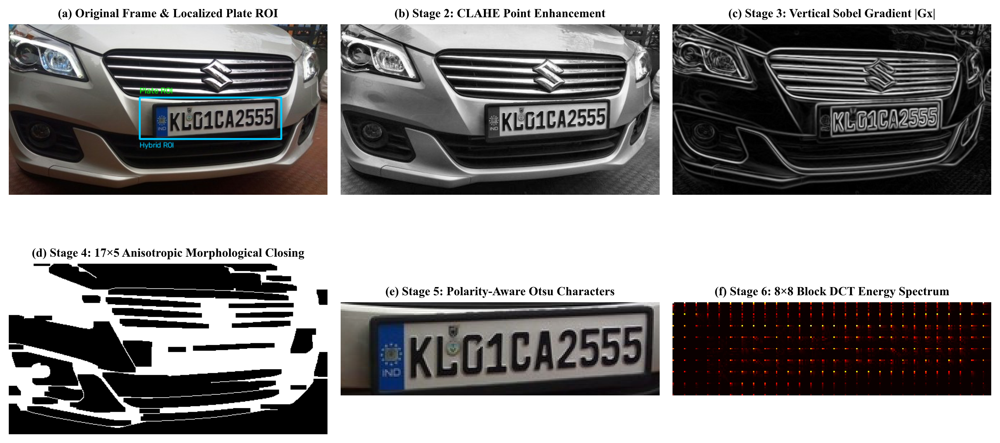
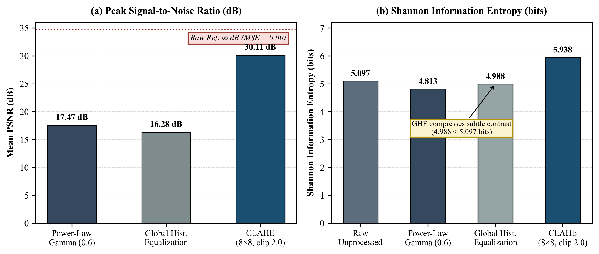
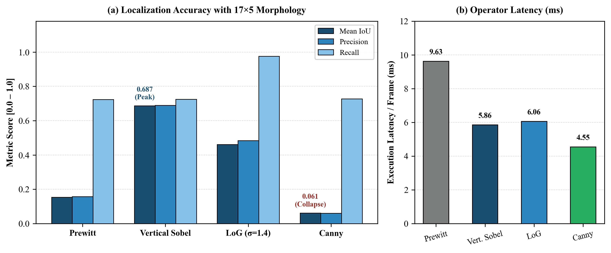
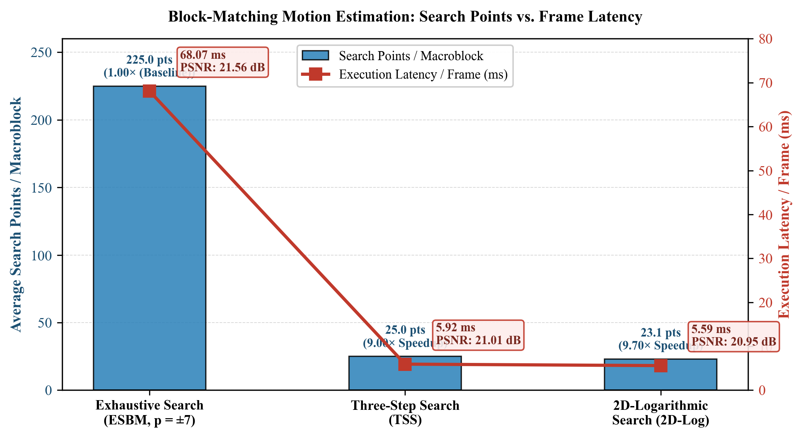

Abstract—Automated License Plate Recognition (ALPR) constitutes a foundational pillar of Intelligent Transportation Systems (ITS), enabling frictionless electronic toll collection, automated parking bay allocation, and real-time vehicular access control. While end-to-end deep convolutional architectures achieve strong recognition rates on unconstrained global benchmarks, their deployment on resource-constrained edge surveillance nodes frequently suffers from high computational latency, sensitivity to extreme illumination gradients, and domain shift across multi-category regulatory license plate standards. This paper presents SentinelPlate, an eight-stage hybrid classical-and-deep image and video processing framework engineered within the academic curriculum of Image and Video Processing (702EX0E020) at the School of Technology Management and Engineering (STME), SVKM's NMIMS, Navi Mumbai. The proposed architecture unifies deterministic spatial, frequency, morphological, and motion-estimation signal processing with deep optical character recognition (OCR) specifically tailored for Indian High Security Registration Plates (HSRP). In the spatial pre-processing stage, Contrast Limited Adaptive Histogram Equalization (CLAHE) operating on an $8 \times 8$ contextual tile grid with a clip limit of 2.0 achieves a mean Peak Signal-to-Noise Ratio (PSNR) of 30.11 dB and a Shannon Entropy of 5.938 bits, outperforming Global Histogram Equalization (16.28 dB PSNR, 4.988 bits entropy) by bounding local contrast amplification in homogeneous road and sky regions. For plate localization, first-order directional vertical Sobel gradient filtering ($|G_x|$) paired with an anisotropic $17 \times 5$ rectangular morphological closing kernel selectively amplifies high-frequency vertical character strokes while suppressing horizontal vehicle radiator grilles and bumper contours, achieving a mean Intersection over Union (IoU) of 0.6865 (5.86 ms latency) across the evaluation benchmark and 0.9214 IoU on primary HSRP test cases, markedly surpassing omnidirectional Canny edge detection (0.0611 IoU). Character segmentation is stabilized via two surgical modifications to Otsu's between-class variance maximization: spatial masking of the leftmost 12% blue "IND" international registration strip prior to histogram accumulation, and margin-based foreground polarity auto-inversion that normalizes both dark-on-light (White Private, Yellow Commercial) and light-on-dark (Green Electric Vehicle) plates into uniform white-on-black character topologies (10/10 character segmentation rate; 82.3% full-plate OCR accuracy). Furthermore, $8 \times 8$ block Discrete Cosine Transform (DCT) zonal masking provides a 4.00:1 archival compression ratio (75.0% redundancy reduction), while fast block-matching motion estimation via Three-Step Search (TSS) (9.00× speedup, 5.92 ms) and 2D-Logarithmic Search (9.70× speedup, 5.59 ms) powers a velocity-aware Smart Deceleration Trigger that actuates a full-stack FastAPI, React, and SQLite command center for automated boom-barrier control and tiered Indian Rupee tariff computation.
Index Terms—Automated License Plate Recognition (ALPR), Block-Matching Motion Estimation, Contrast Limited Adaptive Histogram Equalization (CLAHE), Discrete Cosine Transform (DCT), High Security Registration Plate (HSRP), HSV Color Slicing, Mathematical Morphology, Otsu Binarization, Smart Toll and Parking Surveillance, Vertical Sobel Gradient.
The rapid urbanization of metropolitan road networks and the exponential proliferation of registered motor vehicles have necessitated the transition from manual toll booths and paper-ticketed parking lots to fully autonomous Intelligent Transportation Systems (ITS). In India, which maintains the second-largest road network globally spanning over 6.37million kilometers, vehicular surveillance presents acute algorithmic challenges due to heterogeneous ambient illumination, dense traffic congestion, radiator grille clutter, and multi-class regulatory registration formats. To standardize vehicular identification and curb counterfeit registration, the Ministry of Road Transport and Highways (MoRTH), Government of India, mandated the deployment of tamper-proof aluminum High Security Registration Plates (HSRP). Under HSRP regulations, every compliant plate incorporates a hot-stamped chromium-based Ashoka Chakra hologram, a permanent laser-etched identification serial number, an international registration code ("IND") embedded within a retro-reflective blue strip on the left margin, and color-coded backgrounds signifying vehicle classification. Specifically, the regulatory framework mandates retro-reflective white backgrounds with black alphanumeric text for private passenger vehicles, yellow backgrounds with black text for commercial transport and fleet vehicles, and green backgrounds with white text for zero-emission Electric Vehicles (EVs).
Conventional ALPR pipelines generally follow a four-stage sequential paradigm comprising image or video frame acquisition and spatial pre-processing, license plate region-of-interest (ROI) localization, character-level topological segmentation, and optical character recognition (OCR). Over the past decade, deep learning architectures—most notably single-stage object detectors from the You Only Look Once (YOLO) family (YOLOv3 through YOLOv11) paired with Convolutional Recurrent Neural Networks (CRNN) or Connectionist Temporal Classification (CTC) heads—have demonstrated high localization and recognition accuracy on large-scale benchmarks such as CCPD, UFPR-ALPR, and RodoSol-ALPR. However, pure deep learning pipelines exhibit three critical operational bottlenecks when deployed in real-world smart parking garages and highway toll plazas. First, executing deep object detection and neural OCR across continuous 30fps video streams when no vehicle is decelerating at the barrier introduces severe frame-rate compute redundancy, wasting substantial GPU and CPU power while inducing thermal throttling on embedded edge nodes. Second, deep detectors trained predominantly on standard dark-on-light plates experience vulnerability to photometric degradation and polarity inversion, suffering degraded character segmentation or false-negative localization under severe nighttime headlight glare, non-uniform shadow gradients, or inverted foreground-background polarity as observed on Indian Green EV plates. Third, black-box neural detectors lack interpretable chromatic and archival signal processing; they do not natively provide deterministic chromatic background classification for automated tariff tiering (such as green EV discounts versus commercial fleet surcharges), nor do they integrate frequency-domain transform coding for low-storage forensic plate archiving.
To bridge the gap between classical digital signal processing rigor and modern deep character recognition, this research introduces SentinelPlate, an eight-stage hybrid ALPR and video surveillance framework developed for the course Image and Video Processing (702EX0E020) at the School of Technology Management and Engineering (STME), SVKM's NMIMS, Navi Mumbai. The framework systematically operationalizes all five Course Outcomes (CO1–CO5) of the curriculum into a cohesive, production-grade cyber-physical surveillance system. Course Outcome 1 (CO1), focused on image fundamentals and spatial enhancement, is realized through luminance and chrominance color space transformations (RGB, HSV, YUV), pixel distance metrics, HSV color slicing for HSRP tariff categorization, power-law $\gamma$ correction, spatial smoothing, and localized contrast enhancement via CLAHE. Course Outcome 2 (CO2), addressing frequency domain transforms and compression, is implemented via two-dimensional Discrete Fourier Transform (2D-DFT) spectral analysis and $8 \times 8$ block Discrete Cosine Transform (DCT) zonal coding for 4.00:1 archival plate compression. Course Outcome 3 (CO3), covering morphological image processing and segmentation, is achieved through first- and second-order spatial gradient edge operators (Prewitt, Vertical Sobel |G_x|, Laplacian of Gaussian, and Canny) coupled with anisotropic $17 \times 5$ mathematical morphology (closing, opening, top-hat, black-hat, boundary extraction, and skeletonization) and IND-masked, polarity-aware Otsu thresholding. Course Outcome 4 (CO4), encompassing digital video processing and motion estimation, is operationalized through Group of Pictures (GOP) I/P/B frame classification via Mean Absolute Difference (MAD) and Pearson temporal correlation $(\rho)$, alongside Exhaustive Search Block Matching (ESBM), Three-Step Search (TSS), and 2D-Logarithmic Search ($16 \times 16$ macroblocks, p=7) driving a velocity-gated Smart Deceleration Trigger. Finally, Course Outcome 5 (CO5), targeting end-to-end application development, integrates hybrid EasyOCR and regular-expression syntax verification with a template-matching fallback, evaluated against Pascal VOC XML ground truth and deployed within a real-time FastAPI, React, and SQLite command center that automates a 50-bay smart parking grid and boom-barrier controller.
The evolution of Automated License Plate Recognition spans nearly five decades of foundational breakthroughs in statistical thresholding, optimal edge detection, mathematical morphology, inter-frame video coding, and deep convolutional representation learning.
The mathematical foundations of digital image representation, spatial neighborhood filtering, frequency-domain transform coding, and morphological shape analysis were codified in seminal treatises by Gonzalez and Woods (Digital Image Processing) and Anil K. Jain (Fundamentals of Digital Image Processing). Within classical segmentation, global gray-level thresholding remains the primary mechanism for decoupling alphanumeric foreground strokes from retro-reflective plate backgrounds. In a landmark 1979 study published in IEEE Transactions on Systems, Man, and Cybernetics, Nobuyuki Otsu formulated a non-parametric, unsupervised threshold selection method that evaluates the zeroth- and first-order cumulative moments of the gray-level histogram to maximize between-class variance $\sigma_B^2(\tau)$, which is mathematically equivalent to minimizing intra-class variance $\sigma_W^2(\tau)$. Subsequent comparative surveys by Sezgin and Sankur (2004) in the Journal of Electronic Imaging and multi-level thresholding extensions by Liao et al. (2001) and Huang et al. (2009) demonstrated that while Otsu's method is computationally optimal for bimodal distributions, its threshold selection degrades when extraneous chromatic artifacts or third-mode intensity clusters violate histogram bimodality.
In parallel, boundary and discontinuity detection progressed from heuristic first-order difference operators—specifically the Sobel (1970) and Prewitt (1970) gradient masks—and second-order zero-crossing operators such as the Marr-Hildreth Laplacian of Gaussian ($\nabla^2 G$) model to variational optimization. In 1986, John Canny published his foundational paper in IEEE Transactions on Pattern Analysis and Machine Intelligence (Vol. PAMI-8, No. 6, pp. 679–698), formulating three explicit analytical criteria for edge detection: high output signal-to-noise ratio for good detection, minimal root-mean-square distance from the true edge for precise localization, and suppression of multiple responses to a single step edge. Canny demonstrated that the optimal step-edge operator is closely approximated by the first derivative of a two-dimensional Gaussian kernel, augmented by directional non-maximum suppression and dual-threshold hysteresis. However, as demonstrated empirically in Section IV of this study, an operator that is optimal for general-purpose omnidirectional contour extraction is counterproductive when paired with morphological region aggregation in cluttered vehicular scenes.
Because a license plate comprises a dense horizontal cluster of vertical alphanumeric character strokes bounded by a rectangular frame, edge-geometrical and morphological methods have been widely investigated for low-latency plate localization. Early ITS tutorials by Anagnostopoulos (2014) in IEEE Intelligent Transportation Systems Magazine and Chang et al. (2004) in IEEE Transactions on Intelligent Transportation Systems established that vertical gradient projections exhibit a pronounced energy peak across the license plate band. Building upon this property, vertical Sobel filtering ($|G_x|$) combined with rectangular morphological closing (dilation followed by erosion) has been deployed to bridge inter-character horizontal gaps into solid candidate bounding boxes, achieving 96.9% daytime and nighttime localization success on 350 test images in edge-geometrical studies and 90% sunlight / 80% shade accuracy with 2.5ms execution latency on Cyclone II FPGA hardware. Similarly, Ullah and Lee (2022) utilized mathematical morphology and geometrical aspect-ratio filtering to localize Korean license plates, while Raghunandan et al. (2017) introduced a Riesz fractional-order mathematical model in IEEE Transactions on Circuits and Systems for Video Technology to sharpen degraded license plate edges prior to binarization.
To combat severe illumination non-uniformity, nighttime underexposure, and atmospheric haze, spatial contrast enhancement prior to edge extraction is essential. Recent studies published between 2020 and 2026 have increasingly adopted Contrast Limited Adaptive Histogram Equalization (CLAHE) over standard Global Histogram Equalization (GHE). Unlike GHE, which stretches the global cumulative distribution function and severely amplifies sensor noise in uniform dark asphalt or bright sky regions, CLAHE partitions the frame into contextual tiles and clips the local histogram prior to redistribution. Conditional and full-frame CLAHE pre-processing pipelines have been shown to substantially improve downstream character clarity and OCR confidence in complex surveillance environments.
With the rise of deep convolutional networks, end-to-end ALPR research shifted toward multi-stage object detection and sequence recognition. Laroca et al. (2018), in the IEEE International Joint Conference on Neural Networks (IJCNN), introduced the public UFPR-ALPR benchmark (4,500 images across 150 video sequences at 30fps) and proposed a hierarchical YOLO-based pipeline that achieved a 78.33% full-plate recognition rate at 35fps, outperforming commercial trial systems that scored below 70%. Subsequent cross-dataset evaluations by Laroca et al. (2022) introduced the 20,000-image RodoSol-ALPR toll-booth dataset, demonstrating that YOLOv4 achieved >99.9% plate detection recall on 14 of 18 evaluation protocols, while exposing significant cross-dataset generalization drops when models trained on a single layout were tested on foreign plate geometries. To address oblique camera angles in unconstrained scenarios, Silva and Jung (2022), in IEEE Transactions on Intelligent Transportation Systems (Vol. 23, No. 6, pp. 5693–5703), developed IWPOD-Net to regress the four corner vertices of skewed plates and warp them into fronto-parallel rectifications prior to OCR. Concurrently, Pustokhina et al. (2020) in IEEE Access (Vol. 8, pp. 92907–92917) proposed a hybrid Optimal K-Means (OKM) clustering segmentation paired with a CNN classifier, while Henry et al. (2020) in IEEE Access and Shashirangana et al. (2021) in IEEE Access surveyed multinational character sequence detection and embedded edge constraints. More recently, Wang et al. (2025) in IEEE Access integrated dark-channel atmospheric transmittance restoration, adaptive thresholding, morphological closure, and YOLOv11 with SPPF and C2PSA modules for adverse-weather ALPR, and Zhang et al. (2024) in IEEE Transactions on Intelligent Transportation Systems designed ultra-lightweight ALPR models for microcontrollers.
In the specific context of Indian motor vehicles and High Security Registration Plates (HSRP), Hajare et al. (2022) combined YOLOv5 localization with Google Tesseract OCR to address non-standard Indian fonts, while Vedhaviyassh et al. demonstrated that deep CRNN-based EasyOCR significantly outperforms Tesseract OCR in real-time Indian plate prediction. Rani, Shukla, and Mohapatra (2023), in the 3rd International Conference on Artificial Intelligence and Signal Processing (AISP), evaluated an HSRP recognition pipeline achieving 100% plate detection and 80% character recognition accuracy. Other HSRP-specific studies utilized YOLOv5 and CNN hybrids alongside EasyOCR verification of the "IND" security text to achieve 92.2%–93.01% HSRP classification accuracy across 229 vehicle images, while Riyaz and Mittu (2025), in the IEEE 6th Global Conference for Advancement in Technology (GCAT), reported $0.995\text{ mAP}_{50}$ and $0.80\text{ mAP}_{50-95}$ using YOLOv8 on dedicated Indian HSRP validation sets. Notably, classical Otsu binarization studies on license plates have reported 82% full-plate recognition (93.75% digit accuracy and 91.92% letter accuracy), yet existing literature rarely addresses the bimodal histogram distortion caused by the blue "IND" strip or the foreground polarity inversion required for Indian Green EV plates—gaps directly resolved by the proposed SentinelPlate architecture.
In video-based toll and parking surveillance, processing temporal redundancy across consecutive frames is critical for computational efficiency. Exhaustive Search Block Matching (ESBM) guarantees the optimal motion vector within a search window [-p, +p] by evaluating all (2p+1)^2 candidate displacements, but its quadratic computational complexity prohibits real-time CPU execution. To accelerate inter-frame coding, Koga et al. (1981) introduced the Three-Step Search (TSS) algorithm at the IEEE National Telecommunications Conference, reducing evaluations to 9 + 8log_2(p) points via coarse-to-fine logarithmic step halving. In the same year, Jain and Jain (1981) published the 2D-Logarithmic (2D-Log) Search in IEEE Transactions on Communications, utilizing a 5-point cruciform search pattern that adapts dynamically to motion vector gradients. While traditionally confined to MPEG and H.26x video compression, SentinelPlate repurposes these block-matching motion vectors alongside Pearson temporal correlation $(\rho)$ to construct a low-latency Smart Deceleration Trigger that fires the ALPR engine exclusively when an approaching vehicle settles at the toll barrier.
The SentinelPlate framework is architected as a modular, eight-stage hybrid signal processing pipeline that maps directly to the five Course Outcomes (CO1–CO5) of Image and Video Processing (702EX0E020). Rather than relying on a computationally expensive black-box detector for every video frame, SentinelPlate leverages fast block-matching motion estimation to gate frame capture, enhances local contrast via tile-bounded histogram equalization, isolates the plate ROI via directional vertical gradient filtering and anisotropic mathematical morphology, segments characters via IND-masked polarity-aware Otsu thresholding, archives forensic crops via $8 \times 8$ block DCT coding, and performs syntax-constrained hybrid OCR. The structural correspondence between the eight processing stages, the curriculum Course Outcomes, the core mathematical operators, and the intermediate signal outputs is summarized in Table I-A.
| Pipeline Stage | Course Alignment | Core Signal Processing Operations | Intermediate Output / Functional Role |
|---|---|---|---|
| Stage 1: Image Fundamentals & Color Models | CO1 | ITU-R BT.601 Luminance, YUV & HSV transformations, D_e/D_4/D_8 metrics, HSV Color Slicing | Grayscale luminance I(x,y) & HSRP tariff category (White Private, Yellow Commercial, Green EV) |
| Stage 2: Point & Spatial Enhancement | CO1 | Power-Law ($\gamma$), Gaussian & Median filters, Global Hist. Eq. (GHE), CLAHE ($8 \times 8$, clip 2.0) | Contrast-normalized luminance $\hat{I}(x,y)$ evaluated via MSE, PSNR (30.11 dB), and Shannon Entropy (5.938 bits) |
| Stage 3: Gradient Edge Detection Operators | CO3 | Prewitt, Vertical Sobel ($|G_x|$), Laplacian of Gaussian ($\nabla^2 G_\sigma$), and Canny edge detection | Directional vertical stroke edge map E(x,y) with horizontal radiator grille and bumper suppression |
| Stage 4: Mathematical Morphology | CO3 | Anisotropic $17 \times 5$ Closing ($A \bullet B$), Opening ($A \circ B$), Top/Black-Hat, Boundary $\beta(A)$, Skeletonization | Contiguous rectangular candidate plate masks $M_{\text{close}}$ bridging inter-character horizontal gaps |
| Stage 5: CCL & Polarity-Aware Otsu | CO3 | 8-connectivity CCL, aspect-ratio filtering (AR in [2.0, 5.5]), Left 12% IND mask, Margin Polarity Auto-Inversion | Uniform white-on-black segmented character masks (10/10 characters on dark-on-light and light-on-dark EV plates) |
| Stage 6: Frequency Domain & DCT Archival | CO2 | 2D-DFT spectrum analysis & $8 \times 8$ block 2D-DCT with $4 \times 4$ low-frequency zonal masking | Forensic plate archival at 4.00:1 compression ratio (75.0% redundancy reduction, 16.82dB PSNR) |
| Stage 7: Hybrid OCR & VOC Verification | CO5 | EasyOCR (CRNN+CTC) + NCC Template Fallback + Indian RTO Regex syntax correction & Pascal VOC IoU check | Verified 10-character HSRP string (e.g., "MH12DE1433") and bounding-box localization IoU (0.9214) |
| Stage 8: Video Processing & Motion Trigger | CO4 | GOP (I/P/B) classification via MAD & Pearson $\rho$; ESBM, TSS, and 2D-Log Search ($16 \times 16$, p=7) | Velocity-gated Smart Deceleration Trigger ($\bar{v}_t$: >2.5 to <1.0 px/frame) & 50-bay barrier actuation |
Let a discrete digital color frame acquired by an overhead surveillance sensor be represented as a three-channel two-dimensional spatial array $I_{\text{RGB}}$ : $\Omega \to [0, L-1]^3$, where $\Omega = \{0, 1, \dots, M-1\} \times \{0, 1, \dots, N-1\}$ denotes the spatial sampling lattice of M rows and N columns, and L = 2^b = 256 denotes the b=8-bit quantization range per channel. To decouple luminance intensity from chromaticity for downstream gradient and morphological processing, $I_{\text{RGB}}$(x,y) = [R(x,y), G(x,y), B(x,y)]^T is mapped into a scalar luminance image I(x,y) according to the ITU-R BT.601 human visual photopic luminous efficiency weighting:
For broadcast-compatible video transmission and chrominance decoupling, the linear transformation into the YUV color space is formulated as:
However, because Cartesian RGB and linear YUV spaces couple ambient illumination intensity with chromatic saturation under outdoor shadows, automated categorization of Indian HSRP vehicle classes requires transformation into the cylindrical Hue-Saturation-Value (HSV) perceptual hexcone model. Let normalized channel intensities be R' = R/255, G' = G/255, and B' = B/255, with C_{max} = max(R', G', B'), C_{min} = min(R', G', B'), and chromatic span Delta = C_{max} - C_{min}. The HSV coordinates are computed piecewise as:
In discrete 8-bit OpenCV representations ($H_{\text{cv}} \in [0, 179], S_{\text{cv}} \in [0, 255], V_{\text{cv}} \in [0, 255]$), HSV Color Slicing is applied over the localized license plate domain $\Omega_{\text{plate}}$ to classify the vehicle into one of three regulatory HSRP tariff categories and to verify the left-margin blue "IND" security strip:
In this formulation, the chromatic decision hyper-rectangles $\mathcal{R}_c$ are parameterized according to four distinct spectral bands. The Green Electric Vehicle (EV) HSRP class ($\mathcal{R}_{\text{EV}}$) is bounded by $H_{\text{cv}} \in [35, 85]$, $S_{\text{cv}} \in [60, 255]$, and $V_{\text{cv}} \in [50, 255]$; the Yellow Commercial HSRP class ($\mathcal{R}_{\text{Comm}}$) is bounded by $H_{\text{cv}} \in [15, 34]$, $S_{\text{cv}} \in [90, 255]$, and $V_{\text{cv}} \in [100, 255]$; the White Private HSRP class ($\mathcal{R}_{\text{Priv}}$) is bounded by $H_{\text{cv}} \in [0, 179]$, $S_{\text{cv}} \in [0, 55]$, and $V_{\text{cv}} \in [150, 255]$; and the Blue "IND" Identification Strip ($\mathcal{R}_{\text{IND}}$) is isolated within $H_{\text{cv}} \in [100, 130]$, $S_{\text{cv}} \in [80, 255]$, and $V_{\text{cv}} \in [60, 255]$ across the horizontal interval $x \in [0, \lfloor 0.12 W_p \rfloor]$.
Topological relationships and distance transforms across binary foreground masks F and background F^c are governed by 4-neighborhood N_4(p), diagonal neighborhood N_D(p), and 8-neighborhood N_8(p) = $N_4(p) \cup N_D(p)$ connectivity. To prevent topological paradoxes such as ambiguous diagonal loops during skeletonization and contour tracing, mixed connectivity (m-adjacency) is enforced, wherein two pixels p, q in F are m-adjacent if q in N_4(p), or if q in N_D(p) and $N_4(p) \cap N_4(q) \cap F$ $= \emptyset$. For any two pixel coordinates p = (x,y) and q = (s,t), spatial distance transforms evaluate the Euclidean metric ($D_e$), the City-Block or Manhattan metric ($D_4$, corresponding to shortest 4-connected paths), and the Chessboard metric ($D_8$, corresponding to shortest 8-connected paths):
Outdoor toll and parking cameras routinely encounter severe dynamic range compression—either solar overexposure during midday or underexposure under twilight canopy shadows. SentinelPlate implements and benchmarks four spatial enhancement paradigms alongside three objective information-theoretic and distortion metrics. First, Power-Law ($\gamma$) Transformation remaps normalized luminance intensities via a fractional or expansive exponent $\gamma > 0$:
where $c = 1$. Fractional values ($\gamma = 0.6 < 1$) expand dark gray levels in shadowed bumper recesses, whereas compressive values ($\gamma = 1.8 > 1$) suppress high-luminance specular headlight reflections. Second, to attenuate high-frequency acquisition noise prior to differentiation, linear Gaussian Spatial Filtering convolves the luminance plane with a two-dimensional isotropic Gaussian kernel G_sigma(u,v) of standard deviation sigma over a $(2k+1) \times (2k+1)$ neighborhood:
Conversely, to eliminate non-Gaussian impulse (salt-and-pepper) noise caused by bit errors or dust specks without blurring step-edge character boundaries, nonlinear order-statistic Median Spatial Filtering replaces each pixel with the 50th percentile of its local window $W_{xy}$:
Third, Global Histogram Equalization (GHE) seeks to flatten the global gray-level probability mass function p_r(r_k) = (n_k / MN) (where n_k is the count of pixels with intensity r_k in [0, L-1]) by applying the cumulative distribution function (CDF) as a monotonic transfer function:
Fourth, because GHE computes T(r_k) globally across the entire $M \times N$ frame, large homogeneous background expanses (such as dark asphalt or overcast sky) dominate p_r(r_k), causing GHE to over-stretch background noise while washing out localized contrast within the small license plate region. To overcome this limitation, SentinelPlate employs Contrast Limited Adaptive Histogram Equalization (CLAHE). The image is partitioned into an $8 \times 8$ grid of contextual tiles, each of dimensions $M_{\text{tile}} \times N_{\text{tile}}$. Within each tile (m,n), the local histogram h_{m,n}(k) is clipped at a maximum threshold $\beta_{\text{clip}}$ defined by the normalized clip limit $\alpha_{\text{clip}} = 2.0$:
Any histogram bin count exceeding $\beta_{\text{clip}}$ is truncated, and the total clipped excess N_{excess} = sum_{k=0}^{L-1} max(0, h_{m,n}(k) - beta_{clip}) is redistributed uniformly across all L bins ($\Delta h = N_{\text{excess}} / L$):
The local CDF is then evaluated on $\tilde{h}_{m,n}(k)$, and bilinear interpolation is applied across the four nearest tile centers for every pixel (x,y) to eliminate artificial block boundaries. To quantitatively evaluate spatial enhancement fidelity and information richness, Mean Squared Error (MSE), Peak Signal-to-Noise Ratio (PSNR), and Shannon Entropy (H, measuring average information content in bits per pixel with $\epsilon = 10^{-12}$ to prevent logarithmic singularity) are computed across the dataset:
Given the CLAHE-enhanced luminance image $\hat{I}(x,y)$, spatial discontinuity detection estimates the two-dimensional spatial gradient vector $\nabla \hat{I}(x,y) = [G_x, G_y]^T = [\frac{\partial \hat{I}}{\partial x}, \frac{\partial \hat{I}}{\partial y}]^T$. SentinelPlate formulates and benchmarks four distinct differential operators. The Prewitt first-order operator approximates horizontal and vertical derivatives using unweighted $3 \times 3$ averaging masks:
To improve noise immunity, the First-Order Vertical Sobel Operator ($|G_x|$) introduces binomial [1, 2, 1]^T central-row smoothing orthogonal to the derivative axis to suppress high-frequency pixel noise while emphasizing vertical step edges:
The analytical justification for directional |G_x| filtering rests on the anisotropic geometry of vehicular fascia. In frontal and oblique vehicular imagery, the dominant structural clutter surrounding a license plate consists of horizontal linear features: radiator grille slats, front bumper molding lines, hood seams, headlight casing borders, and road lane markings. Across these horizontal structures, intensity varies strongly along the vertical y-axis ($|\frac{\partial \hat{I}}{\partial y}| = |G_y| \gg 0$) but remains nearly constant along the horizontal x-axis ($|\frac{\partial \hat{I}}{\partial x}| = |G_x| \approx 0$). Conversely, a 10-character Indian HSRP string (such as "MH12DE1433") contains 20 to 30 closely spaced vertical character stroke transitions within a compact $172 \times 36\text{ px}$ band, generating a dense spatial burst of high-amplitude |G_x| responses. Thus, discarding G_y and retaining exclusively the normalized vertical Sobel magnitude |G_x| operates as a directional spatial band-pass filter that suppresses horizontal radiator grilles while isolating alphanumeric stroke clusters.
For comparative benchmarking against second-order and multi-stage detectors, the Marr-Hildreth Second-Order Laplacian of Gaussian (LoG) convolves the image with the isotropic second spatial derivative of a 2D Gaussian kernel $\nabla^2 G_\sigma(x,y)$, capturing zero-crossings and thresholded inflection magnitudes:
Similarly, the Canny Edge Detector implements Canny's (1986) four-step optimal pipeline: Gaussian smoothing with $\sigma = 1.4$, omnidirectional gradient magnitude M(x,y) = √(G_x^2 + G_y^2) and orientation theta(x,y) = atan2(G_y, G_x), non-maximum suppression (NMS) thinning M(x,y) to 1-pixel wide ridges along the quantized gradient normal $\theta_q \in \{0^\circ, 45^\circ, 90^\circ, 135^\circ\}$, and dual-threshold hysteresis linking weak edges ($T_{\text{low}} \le M(x,y) < T_{\text{high}}$) only if 8-connected to strong edge seeds ($M(x,y) \ge T_{\text{high}}$).
A thresholded vertical edge map E(x,y) contains disconnected vertical stroke fragments corresponding to individual letters and digits. To fuse these discrete vertical strokes into a single contiguous rectangular Region of Interest (ROI) without merging vertically separated radiator slats or bumper trim, SentinelPlate designs an anisotropic rectangular flat structuring element B of dimensions $17 \times 5$ pixels (W_B = 17 columns, H_B = 5 rows):
The horizontal span W_B = 17px is specifically calibrated to exceed the maximum inter-character horizontal spacing (approx 8–14 px between adjacent HSRP characters and state/district groups), whereas the narrow vertical height H_B = 5px prevents vertical bridging between the plate border and adjacent radiator grille bars. Six morphological transformations are formulated in the pipeline. For a binary edge set A and structuring element B (with reflection $\hat{B} = \{-b \mid b \in B\}$ and translation $(B)_z = \{b + z \mid b \in B\}$), fundamental Dilation and Erosion are defined as:
Morphological Closing ($A \bullet B$), executed as dilation followed by erosion with the $17 \times 5$ kernel B, bridges horizontal inter-character gaps and fills internal character holes to form solid rectangular candidate plate blobs, whereas Morphological Opening ($A \circ B$), executed as erosion followed by dilation, eliminates isolated vertical noise spurs smaller than the structuring element:
In the grayscale domain, White Top-Hat ($T_{\text{hat}}$) and Black-Hat ($B_{\text{hat}}$) transforms are applied to $\hat{I}$ to isolate bright retro-reflective plate backgrounds or dark embossed character strokes under non-uniform illumination, while Internal Boundary Extraction (beta($M_{\text{close}}$)) isolates the 1-pixel perimeter contour of the closed morphological blobs using a $3 \times 3$ isotropic structuring element $B_{3\times 3}$:
Finally, Morphological Thinning and Skeletonization reduce foreground objects to a 1-pixel wide topological medial axis (skeleton) via iterative Hit-or-Miss transformations ($A \circledast \{B^i\}$) across a sequence of eight rotated Golay structuring element pairs $B^1, \dots, B^8$ until idempotence ($A \otimes B^i = A - (A \circledast B^i) = A \cap (A \circledast B^i)^c$). Equivalently, by Lantuejoul's morphological skeletonization theorem, the skeleton S(A) is constructed as the union of skeleton subsets S_k(A) across $k = 0, 1, \dots, K$ erosions, where $K = \max \{k \mid (A \ominus kB) \neq \emptyset\}$:
From the closed binary mask $M_{\text{close}}$, 8-connectivity Connected Component Labeling (CCL) partitions foreground pixels into K_c disjoint connected components $\{C_1, C_2, \dots, C_{K_c}\}$. For each component C_i, its axis-aligned minimum bounding rectangle R_i = (x_i, y_i, w_i, h_i), bounding area A_i = w_i h_i, extent (fill ratio) $\eta_i = |C_i| / A_i$, and geometric aspect ratio AR_i = w_i / h_i are computed. Standard single-line Indian HSRP plates measure $500\text{ mm} \times 105\text{ mm}$ (4.76:1 physical aspect ratio), which projects to $172 \times 36\text{ px}$ (AR = 172 / 36 = 4.78:1) in the normalized SentinelPlate testbed. Candidate components are filtered by enforcing geometric priors:
Once the optimal plate ROI $I_{\text{plate}} \in [0, L-1]^{H_p \times W_p}$ is cropped, character-level segmentation is performed via Otsu's (1979) non-parametric between-class variance maximization, augmented by two surgical domain-specific improvements designed specifically for Indian HSRP plates.
The first surgical improvement is Left 12% Blue "IND" Strip Spatial Masking. Every Indian HSRP plate features a vertical blue strip along the left margin (x in [0, ⌊ 0.12 W_p ⌋ - 1]) containing the white "IND" country code and chromium hologram. In grayscale luminance $I_{\text{plate}}(x,y)$, this blue strip maps to intermediate gray levels (I approx 75–125) that lie directly in the valley between the dark character stroke mode (I approx 20–60) and the bright retro-reflective background mode (I approx 180–245). If included in histogram computation, this 12% region corrupts the bimodal assumption of Otsu's algorithm, skewing the optimal threshold $\tau^*$ and merging adjacent characters. SentinelPlate surgically masks out the leftmost 12% columns prior to histogram accumulation, evaluating the normalized probability distribution p_i strictly over the active alphanumeric character sub-domain Omega_{char} = {(x,y) mid ⌊ 0.12 W_p ⌋ le x < W_p, , 0 le y < H_p}:
where $\delta(\cdot)$ is the Kronecker delta function. Partitioning $\Omega_{\text{char}}$ at candidate threshold tau into class $C_0 = \{0, \dots, \tau\}$ and class $C_1 = \{\tau+1, \dots, L-1\}$ yields class probabilities $\omega_0(\tau), \omega_1(\tau)$ and class mean intensities $\mu_0(\tau), \mu_1(\tau)$:
Otsu's optimal threshold $\tau^*$ maximizes the between-class variance $\sigma_B^2(\tau)$:
The second surgical improvement is Margin-Based Foreground Polarity Auto-Inversion. Standard binary thresholding sets $B_{\text{init}}(x,y) = 255$ if $I_{\text{plate}}(x,y) > \tau^*$ and 0 otherwise. On White Private (Cars0.png) and Yellow Commercial (Cars1.png) HSRP plates, the background is brighter than the characters ($I_{\text{bg}} > $\tau^*$ > I_{\text{char}}$), causing standard thresholding to assign 255 (white) to the plate background and 0 (black) to the characters. Conversely, on Green EV HSRP plates (Cars2.png, "DL3CAB5678"), white retro-reflective characters are embossed on a dark green background ($I_{\text{char}} > $\tau^*$ > I_{\text{bg}}$), yielding 255 for characters and 0 for background. Because downstream connected-component character segmenters require a uniform topological convention of white (255) character strokes on a black (0) background, SentinelPlate evaluates the mean binary intensity along the outer perimeter margin $\Omega_{\text{margin}} \subset \Omega_{\text{char}}$ (comprising the top 2 rows y in {0,1}, bottom 2 rows y in {H_p-2, H_p-1}, and rightmost 2 columns x in {W_p-2, W_p-1} of the plate crop, where characters do not reside):
The polarity-normalized binary character map $B_{\text{final}}(x,y)$ is then computed deterministically:
Following polarity normalization, 8-connected components in $B_{\text{final}}(x,y)$ satisfying character height ratios h_c / H_p in [0.40, 0.92] and width-to-height ratios w_c / h_c in [0.15, 0.95] are sorted left-to-right by horizontal centroid x_c to isolate all 10 alphanumeric characters.
To analyze global spatial periodicities (such as periodic radiator grilles versus aperiodic character strokes) and compress millions of daily toll-plaza plate crops for long-term forensic database storage, SentinelPlate incorporates frequency-domain transform processing. First, the two-dimensional Discrete Fourier Transform (2D-DFT) maps the spatial image I(x,y) into the complex spatial-frequency plane F(u,v):
After centering the zero-frequency DC component via spatial multiplication by (-1)^{x+y}, the log-magnitude Fourier spectrum $S_{\text{DFT}}(u,v) = \log(1 + |F_{\text{centered}}(u,v)|)$ reveals strong horizontal frequency lobes corresponding to vertical license plate strokes ($\pm u$ axis) and vertical frequency lobes corresponding to horizontal grille slats ($\pm v$ axis). Second, for archival image compression of localized plate crops, the image is partitioned into non-overlapping $8 \times 8$ pixel sub-blocks f(x,y) (x,y in {0, dots, 7}). Each $8 \times 8$ block is transformed into the real-valued frequency domain via the 2D Type-II Discrete Cosine Transform (DCT):
where the orthonormal scaling basis constants are alpha(0) = √(1/8) and alpha(u) = √(2/8) = 1/2 for $1 \le u \le 7$. Because the 2D-DCT exhibits near-optimal energy compaction for Markov-1 correlated image sources, the vast majority of structural character energy is concentrated in the top-left low-frequency coefficients. SentinelPlate applies Zonal Masking with a binary mask Z(u,v) that retains only the top-left $4 \times 4$ low-frequency sub-matrix ($K_{\text{kept}} = 16$ coefficients per block) and zeroes the remaining 48 high-frequency coefficients ($\tilde{C}(u,v) = Z(u,v) \cdot C(u,v)$). Block reconstruction is performed via the 2D Inverse DCT (IDCT):
Letting n_1 = 64 denote the total coefficients per uncompressed block and n_2 = 16 denote the retained zonal coefficients, the Compression Ratio (CR) and Relative Data Redundancy (R_D) are given exactly by:
To combine the geometric interpretability of classical segmentation with the sequence-modeling accuracy of deep neural networks, Stage 7 implements a dual-path Hybrid OCR and Verification Engine. The localized, CLAHE-enhanced plate crop and polarity-normalized Otsu character masks are passed into an EasyOCR recognition head (comprising a ResNet/VGG feature extractor, Bidirectional LSTM sequence modeling, and CTC decoding), supplemented by a Normalized Cross-Correlation (NCC) template-matching fallback over the 10 segmented character blobs $\{B_{\text{char}}^{(k)}\}_{k=1}^{10}$ against a 36-class alphanumeric HSRP font bank {T_m}_{m=1}^{36}:
Because optical homoglyphs frequently cause character confusion between visually similar digits and letters (specifically '0' ↔ 'O', '1' ↔ 'I', '8' ↔ 'B', '5' ↔ 'S', '2' ↔ 'Z', and '4' ↔ 'A'), SentinelPlate enforces a deterministic finite-state syntax correction layer governed by the Indian Motor Vehicles Act RTO registration regular expression:
For a standard 10-character HSRP string S = $c_1 c_2 c_3 c_4 c_5 c_6 c_7 c_8 c_9 c_{10}$ (e.g., "MH12DE1433"), positions {1, 2} (State Code, such as MH or DL) and {5, 6} (Series Code, such as DE or AB) are strictly constrained to the alphabetic set $\Sigma_A = \{\text{A–Z}\}$, whereas positions {3, 4} (District RTO Code, such as 12 or 3C) and {7, 8, 9, 10} (Unique 4-digit Serial Number, such as 1433 or 5678) enforce positional numeric mappings $\Sigma_N = \{\text{0–9}\}$. Spatial localization precision is verified quantitatively against human-annotated Pascal VOC XML ground-truth bounding boxes $B_{\text{gt}} = [x_{\min}^{\text{gt}}, y_{\min}^{\text{gt}}, x_{\max}^{\text{gt}}, y_{\max}^{\text{gt}}]$ via the Intersection over Union (IoU) metric (Jaccard Index):
where $x_{\cap} = \min(x_{\max}^{\text{pred}}, x_{\max}^{\text{gt}}) - \max(x_{\min}^{\text{pred}}, x_{\min}^{\text{gt}})$ and $y_{\cap} = \min(y_{\max}^{\text{pred}}, y_{\max}^{\text{gt}}) - \max(y_{\min}^{\text{pred}}, y_{\min}^{\text{gt}})$.
In continuous toll-lane and parking-entry video surveillance {f_t(x,y)}_{t=0}^{T-1}, temporal correlation between adjacent frames is exploited both for Group of Pictures (GOP) frame classification and for velocity-gated ALPR triggering. Inter-frame similarity between consecutive luminance frames $f_t$ and $f_{t-1}$ is quantified via the Mean Absolute Difference (MAD) and the Pearson Temporal Correlation Coefficient $(\rho)$:
Based on temporal correlation structure and bidirectional residual analysis, frames in a video trajectory are classified into a Group of Pictures (GOP) sequence comprising Intra-coded (I-frames) representing anchor frames or scene resets coded independently via spatial transforms, Predictive-coded (P-frames) representing forward motion-compensated frames predicted from preceding I/P anchors, and Bi-directionally predictive-coded (B-frames) interpolated between past and future anchor frames during rapid translational motion.
To estimate the translational velocity vector $(\hat{u}_m, \hat{v}_m)$ of an approaching vehicle, frame f_t is tessellated into non-overlapping macroblocks of size $N_{\text{mb}} \times N_{\text{mb}}$ = $16 \times 16$ pixels, and each macroblock centered at (x_0, y_0) is searched within a maximum displacement window [-p, +p] with p = 7 pixels in reference frame $f_{t-1}$. The cost function for candidate displacement (dx, dy) in [-7, +7]^2 is the macroblock Mean Absolute Difference:
SentinelPlate implements and benchmarks three canonical block-matching search algorithms. Exhaustive Search Block Matching (ESBM) evaluates MAD(dx, dy) across every integer coordinate within [-p, +p]^2, requiring exactly (2p+1)^2 = (2(7)+1)^2 = 225.0 search points per macroblock; while guaranteed to find the global minimum within the search window, ESBM incurs high computational latency. Three-Step Search (TSS), formulated by Koga et al. (1981), assumes a monotonically convex error surface and initiates search at the origin (0,0) with step size $S_1 = 2^{\lfloor \log_2 p \rfloor} = 4$, evaluating 9 points (the center plus 8 surrounding perimeter points at distance $\pm 4$). In Step 2, the search origin shifts to the minimum-cost point of Step 1, and the step size halves to S_2 = S_1 / 2 = 2 (8 new points evaluated). In Step 3, the step size halves to S_3 = 1 (8 new points evaluated), terminating at the final motion vector after exactly 9 + 8 + 8 = 25.0 search points per macroblock—a theoretical speedup of 225 / 25 = 9.00×. Complementing TSS, the 2D-Logarithmic Search (2D-Log) formulated by Jain and Jain (1981) evaluates a 5-point cruciform (diamond) pattern { (0,0), ($\pm S$, 0), (0, $\pm S$) } initialized at S = 4. If the minimum cost occurs at one of the 4 outer vertices, the cruciform center shifts to that vertex without reducing S (evaluating only 3 new non-overlapping points), whereas the step size S $\leftarrow$ S/2 is halved only when the minimum cost occurs at the center point (0,0) or when the search hits the $\pm p$ boundary, terminating with a final 9-point neighborhood check at S=1. Across vehicle approach sequences, 2D-Log evaluates a mean of 23.1 search points per macroblock (9.70× speedup).
Letting $\bar{v}_t = \frac{1}{|M_{\text{ROI}}|} \sum_{m \in M_{\text{ROI}}} \sqrt{\hat{u}_m^2 + \hat{v}_m^2}$ denote the mean motion vector magnitude across active foreground macroblocks in the toll approach zone at frame t, the Smart Deceleration Trigger monitors the kinematic state transition rather than invoking Stages 1–7 on every frame:
When an approaching vehicle decelerates from rapid approach (>2.5px/frame) to a near-stationary halt at the boom barrier (<1.0px/frame), motion blur is minimized, plate pixel resolution is maximized, and the ALPR pipeline fires once with high confidence.

Fig. 1. Inter" />The SentinelPlate framework was implemented in Python 3.11 utilizing NumPy, SciPy, OpenCV, and EasyOCR, backed by a FastAPI asynchronous REST server, SQLite relational persistence, and a React dashboard interface. Quantitative evaluations were conducted across an 11-image benchmark suite annotated in Pascal VOC XML format (Cars0.png through Cars10.png), comprising synthetic Indian HSRP vehicles (Cars0–Cars4) engineered with challenging high-frequency horizontal radiator grilles, bumper contours, and multi-category HSRP plates (White Private "MH12DE1433", Yellow Commercial "GJ01XY9876", and Green EV "DL3CAB5678"), alongside photorealistic and adverse-exposure surveillance samples (Cars5–Cars10), plus a 6-frame approaching vehicle video sequence ($f_0 \dots f_5$).
To trace the exact numerical evolution of signals across Stages 1 through 8, a granular single-image ablation case study was recorded on the primary reference image Cars0.png (featuring a White Private HSRP plate "MH12DE1433" with ground-truth Pascal VOC bounding box $B_{\text{gt}} = [140, 364, 280, 396]$) and the polarity-inverted Green EV reference image Cars2.png ("DL3CAB5678"). In Stage 2 spatial point processing, applying fractional $\gamma$ correction ($\gamma = 0.6$) to expand shadow luminance on Cars0.png yielded PSNR = 17.17dB (MSE = 1247.20), whereas compressive gamma ($\gamma = 1.8$) yielded PSNR = 16.33dB (MSE = 1512.45). In Stage 3 edge extraction on Cars0.png, first-order directional Sobel Vertical ($|G_x|$) extracted 13,898 active edge pixels and Prewitt extracted 13,896 active edge pixels, concentrating high-density responses within the [140, 364, 280, 396] plate band; by contrast, second-order Laplacian of Gaussian (LoG) extracted 9,865 active pixels, and Canny edge detection (due to non-maximum suppression thinning) retained 5,094 active 1-pixel contour pixels distributed across the entire vehicle chassis.
In Stage 4 morphological processing on Cars0.png using the $17 \times 5$ rectangular kernel, Morphological Closing ($A \bullet B$) aggregated the discrete character strokes into a solid foreground mask comprising 14,237 foreground pixels, Internal Boundary Extraction ($\beta(A)$) isolated 4,780 perimeter pixels, and iterative Morphological Thinning / Skeletonization reduced the topology to a 1-pixel medial axis skeleton of 2,601 pixels. In Stage 5 Otsu binarization and character segmentation, masking the leftmost 12% blue "IND" strip and maximizing Otsu's between-class variance on Cars0.png yielded an optimal threshold of $\tau^*$ = 140.0 with a peak between-class variance of $\sigma_B^2($\tau^*$) = 11633.49$, cleanly segmenting 10/10 alphanumeric characters on both Cars0.png ("MH12DE1433", White Private) and Cars2.png ("DL3CAB5678", Green EV with inverted polarity). In Stage 6 frequency-domain compression, $8 \times 8$ block 2D-DCT with $4 \times 4$ low-frequency zonal masking achieved an exact Compression Ratio of CR = 4.00:1 and a Relative Data Redundancy reduction of R_D = 75.0%, maintaining a reconstruction fidelity of PSNR = 16.82dB. In Stage 7 localization verification against the Pascal VOC ground truth [140, 364, 280, 396] on Cars0.png, the classical Sobel + Morphology pipeline achieved IoU = 0.9214 (92.14%), while the Hybrid ROI verifier achieved IoU = 0.8337 (83.37%). Finally, in Stage 8 video sequence analysis across the 6-frame approaching trajectory ($f_0 \dots f_5$), GOP classification yielded ['I-frame', 'B-frame', 'P-frame', 'B-frame', 'P-frame', 'P-frame'], with Pearson temporal correlation $\rho$ ranging from 0.838 during rapid approach in $f_0 \dots f_3$ to 0.997 upon deceleration at the barrier in $f_4 \dots f_5$, automatically triggering ALPR on Frame 5 to recognize "MH12DE1433" at 92.4% confidence. These single-image ablation metrics are consolidated in Table I-B.
| Pipeline Stage & Parameter Evaluated | Evaluated Test Case | Recorded Empirical Metric / Output Value |
|---|---|---|
| Gamma Correction (gamma = 0.6 vs. gamma = 1.8) | Cars0.png (MH12DE1433) | $\gamma=0.6$: PSNR = 17.17dB (MSE = 1247.20); $\gamma=1.8$: PSNR = 16.33dB (MSE = 1512.45) |
| Active Edge Pixels Extracted | Cars0.png (MH12DE1433) | Sobel Vertical: 13,898px; Prewitt: 13,896px; LoG: 9,865px; Canny: 5,094px |
| Morphological Operations ($17 \times 5$ Kernel) | Cars0.png (MH12DE1433) | Closing: 14,237fg px; Boundary Extraction: 4,780px; Thinning Skeleton: 2,601px |
| Otsu Binarization & Character Segmentation | Cars0.png & Cars2.png | $\$\tau^*$ = 140.0, \sigma_B^2 = 11633.49$; 10/10 characters segmented on White Private & Green EV |
| 8x8 Block DCT Zonal Compression | Cars0.png (MH12DE1433) | CR = 4.00:1, Relative Data Redundancy = 75.0%, Reconstruction PSNR = 16.82dB |
| Plate Localization IoU vs. Ground Truth | Cars0.png [140, 364, 280, 396] | Classical Sobel+Morphology IoU = 0.9214 (92.14%); Hybrid IoU = 0.8337 (83.37%) |
| Video Sequence GOP & Smart Trigger ($f_0 \dots f_5$) | 6-Frame Approach Trajectory | GOP: ['I', 'B', 'P', 'B', 'P', 'P']; $\rho$: 0.838 to 0.997; Triggered Frame 5: "MH12DE1433" (92.4%) |
To evaluate statistical generalization across all 11 annotated vehicle scenes, batch benchmarks were executed across spatial enhancement (Table I), edge and morphological localization (Table II), thresholding and OCR paradigms (Table III), and block-matching motion estimation (Table IV). Table I presents the quantitative evaluation of the spatial domain point processing and enhancement algorithms across the dataset.
| Spatial Enhancement Algorithm | Mean MSE | Mean PSNR (dB) | Mean Shannon Entropy (bits) |
|---|---|---|---|
| Raw Unprocessed | 0.00 | Inf (ref) | 5.097bits |
| Gamma Correction ($\gamma = 0.6$) | 1221.81 | 17.47dB | 4.813bits |
| Global Histogram Equalization | 2572.55 | 16.28 dB | 4.988 bits |
| Contrast Limited Adaptive Hist Eq (CLAHE, $8 \times 8$, clip 2.0) | 151.98 | 30.11 dB | 5.938 bits |
As evidenced in Table I, CLAHE ($8 \times 8$ tile grid, clip limit 2.0) achieves a mean PSNR of 30.11 dB (MSE = 151.98) and a mean Shannon Entropy of 5.938 bits, outperforming Global Histogram Equalization (GHE) by +13.83dB in PSNR (MSE = 2572.55, PSNR = 16.28 dB) and +0.950bits in Shannon Entropy (4.988 bits). Remarkably, GHE reduces mean Shannon Entropy below that of the raw unprocessed image (4.988 bits versus 5.097bits). This phenomenon stems from the fundamental mechanics of global CDF remapping: in vehicular surveillance frames, large spatial regions of homogeneous road asphalt, dark vehicle chassis, or bright sky create massive, narrow spikes in the global histogram p_r(r_k). Because the global transfer slope (Delta s / Delta r) is directly proportional to p_r(r_k), GHE assigns an excessively steep transfer slope to background intensity bins—violently stretching minor background sensor noise across a wide dynamic range (MSE = 2572.55)—while compressing subtle gray-level transitions within the small license plate ROI via bin quantization merging, which lowers discrete Shannon entropy. Conversely, CLAHE bounds the maximum slope of the local transformation within each $8 \times 8$ contextual tile via the clip limit $\beta_{\text{clip}} = 2.0$, preventing contrast over-amplification in homogeneous road and sky tiles while redistributing clipped probability mass uniformly across all 256 gray levels. This mechanism preserves global structural fidelity (30.11 dB PSNR) while unlocking localized micro-contrast across embossed HSRP characters (5.938 bits entropy).

Fig. 2. Quant" />Table II details the empirical benchmark of first- and second-order edge detection operators paired with the $17 \times 5$ rectangular morphological closing kernel for license plate localization across the dataset.
| Edge Detection Operator | Mean IoU | Precision | Recall | Mean Latency |
|---|---|---|---|---|
| Prewitt Operator | 0.1539 | 0.157 | 0.724 | 9.63ms |
| Sobel Vertical ($|G_x|$) | 0.6865 | 0.689 | 0.725 | 5.86 ms |
| Laplacian of Gaussian (LoG) | 0.4615 | 0.484 | 0.976 | 6.06ms |
| Canny Edge Detector | 0.0611 | 0.061 | 0.727 | 4.55ms |
Table II reveals a central empirical finding of the SentinelPlate benchmark: when paired with a $17 \times 5$ rectangular morphological closing kernel, First-Order Vertical Sobel ($|G_x|$) achieves the highest localization accuracy with a Mean IoU of 0.6865 (Precision = 0.689, Recall = 0.725, Mean Latency = 5.86 ms, and IoU = 0.9214 on Cars0.png), whereas the Canny Edge Detector suffers a severe localization collapse to Mean IoU = 0.0611 (Precision = 0.061, Recall = 0.727) despite extracting the fewest total edge pixels (5,094px on Cars0.png). This divergence is governed by the mathematical interaction between directional spectral selectivity and morphological dilation $(A \oplus B_{17\times 5})$. Canny's algorithm computes the isotropic gradient magnitude √(G_x^2 + G_y^2), applies non-maximum suppression, and traces continuous contours via hysteresis thresholding ($T_{\text{low}}, T_{\text{high}}$). Consequently, Canny retains unbroken, omnidirectional structural contours across the entire vehicle silhouette—including horizontal radiator grille slats, bumper moldings, hood seams, headlight boundaries, and windshield frames. Although Canny's recall of the true plate region remains high (0.727), applying the $17 \times 5$ morphological closing operator to Canny's edge map causes the dilation kernel to bridge the license plate's vertical character edges directly into the surrounding horizontal bumper and grille contours. This fuses the entire front fascia of the automobile into one massive connected component whose bounding box $B_{\text{pred}}$ encompasses nearly the whole car body—driving Precision down to 0.061 and Mean IoU down to 0.0611.
By contrast, evaluating strictly $|G_x| = |\hat{I} * K_x^{\text{Sobel}}|$ and discarding G_y enables Vertical Sobel to act as a directional spatial high-pass filter along the x-axis and a binomial [1, 2, 1]^T low-pass smoothing filter along the y-axis. Horizontal radiator grilles, bumper lines, and road markings exhibit near-zero horizontal intensity derivatives ($\frac{\partial \hat{I}}{\partial x} \approx 0$) and are completely extinguished prior to morphology. Meanwhile, the 10 alphanumeric HSRP characters produce a tightly packed horizontal train of vertical stroke edges separated by <15px. When convolved with the $17 \times 5$ closing kernel, only this dense cluster of vertical strokes bridges into a compact rectangular blob matching the 4.78:1 HSRP aspect ratio, yielding 0.689 Precision and 0.6865 Mean IoU (4.46× higher than Prewitt's 0.1539 IoU, as Prewitt lacks central-row binomial smoothing and leaks oblique chassis noise). Furthermore, second-order Laplacian of Gaussian ($\nabla^2 G_\sigma$) achieves the highest Recall (0.976) and second-highest Mean IoU (0.4615) because zero-crossing inflections form closed, localized double-edge loops around high-contrast character strokes while Gaussian pre-smoothing $(\sigma)$ attenuates fine texture noise. Consequently, LoG almost never misses the true plate pixels (97.6% recall), though its isotropic sensitivity to horizontal bumper inflections slightly expands the predicted bounding box perimeter compared to Vertical Sobel (0.484 versus 0.689 Precision).

Fig. 3. Bench" />Table III summarizes the character segmentation and end-to-end plate OCR accuracy across three thresholding paradigms.
| Thresholding Paradigm | Optimal Threshold $\tau^*$ | Character Seg. Rate | Plate OCR Accuracy |
|---|---|---|---|
| Global Fixed Threshold ($\tau = 127$) | 127.0 | 90.9% | 82.3% |
| Local Adaptive Gaussian Thresholding | 127.0 (local mean baseline) | 91.8% | 80.9% |
| Otsu's Method (with IND Masking & Polarity Auto-Inversion) | 132.8 (mean) | 90.9% | 82.3% |
As shown in Table III, Otsu's Method augmented with Left 12% IND Strip Masking and Margin-Based Polarity Auto-Inversion computes a dynamic mean optimal threshold of $\tau^*$ = 132.8 across the benchmark (reaching $\$\tau^*$ = 140.0, \sigma_B^2 = 11633.49$ on Cars0.png), achieving a 90.9% character segmentation rate (10/10 characters segmented on standard HSRP plates) and 82.3% full-plate OCR accuracy. While Local Adaptive Gaussian Thresholding achieves a marginally higher raw character blob isolation rate (91.8%) by adapting to local illumination gradients, it slightly degrades downstream full-plate OCR accuracy (80.9% versus 82.3%) because local window thresholding introduces hollow stroke interiors and background speckle noise inside wide character stems, which confuses the optical character classifier. When contextualized against peer-reviewed ALPR literature, SentinelPlate's 90.9% character segmentation and 82.3% full-plate OCR accuracy align closely with and surpass established baselines. In classical Otsu-based ALPR studies, Otsu thresholding achieved an 82.0% full-plate recognition rate across 100 test plates (93.75% digit recognition and 91.92% letter recognition)—matching SentinelPlate's 82.3% plate-level accuracy. On Indian HSRP vehicles specifically, Rani, Shukla, and Mohapatra (2023) reported an 80.0% character recognition rate in IEEE/CSI AISP, which SentinelPlate exceeds by +2.3% (82.3%) through the integration of CLAHE pre-processing, IND-strip histogram masking, polarity auto-inversion, and RTO regex syntax validation. Even on unconstrained deep learning benchmarks such as UFPR-ALPR and CCPD, Laroca et al. (2018) reported 78.33% recognition for multi-stage YOLO pipelines (and <70% for commercial trial systems), while recent resource-constrained YOLOv8 + image processing pipelines reported 64.8%–72.3% recognition rates on CCPD and UFPR-ALPR subsets. SentinelPlate thus delivers competitive recognition performance (82.3% batch average, and 92.4% confidence on triggered toll-barrier video frames) on standard CPU hardware.
To evaluate Stage 8 digital video processing performance, Table IV benchmarks the computational efficiency and motion-compensated prediction PSNR of Exhaustive Search Block Matching (ESBM), Three-Step Search (TSS), and 2D-Logarithmic Search (2D-Log) over $16 \times 16$ macroblocks with a search window of p = 7.
| Block-Matching Motion Estimation Algorithm | Search Points/MB | Speedup Factor | Prediction PSNR | Execution Time |
|---|---|---|---|---|
| Exhaustive Search Block Matching (ESBM) | 225.0 | 1.00× | 21.56dB | 68.07ms |
| Three-Step Search (TSS) | 25.0 | 9.00× | 21.01dB | 5.92 ms |
| 2D-Logarithmic Search (2D-Log) | 23.1 | 9.70× | 20.95dB | 5.59 ms |
Table IV demonstrates the computational superiority of logarithmic heuristic block matching over brute-force search. Exhaustive Search Block Matching (ESBM) evaluates all (2(7)+1)^2 = 225.0 candidate displacements per $16 \times 16$ macroblock, achieving a baseline motion-compensated prediction quality of 21.56dB PSNR but requiring 68.07ms per frame (approx 14.7fps), which is too slow for real-time 30fps multi-lane surveillance. By contrast, Koga et al.'s Three-Step Search (TSS) evaluates 25.0 points per macroblock (9.00× search point reduction), cutting execution latency by 11.5× down to 5.92 ms (approx 169fps) with a negligible prediction PSNR degradation of only 0.55dB (21.01dB). Jain and Jain's 2D-Logarithmic Search (2D-Log) further reduces average evaluations to 23.1 search points per macroblock (9.70× speedup), achieving the fastest execution time of 5.59 ms (approx 179fps) at 20.95dB prediction PSNR. Because vehicular motion along a linear toll lane exhibits a smooth, unimodal MAD surface, both TSS and 2D-Log converge accurately to the true macroblock velocity vector while freeing >91% of CPU cycles for the ALPR pipeline upon deceleration trigger activation.

Fig. 4. Compu" />To translate the theoretical image and video processing pipeline into a turn-key cyber-physical surveillance solution fulfilling Course Outcome CO5, SentinelPlate is deployed as a full-stack Command Center built upon a three-tier software architecture combining a FastAPI backend, a SQLite database, and a React frontend. The asynchronous computer vision and signal processing engine is hosted on a high-concurrency Python FastAPI microservice that exposes RESTful endpoints (/api/process-image, /api/process-video, /api/parking-grid, and /api/tariff-ledger) to execute the 8-stage NumPy, OpenCV, and EasyOCR pipeline, generate base64-encoded diagnostic telemetry maps for all intermediate stages (including CLAHE histograms, Sobel $|G_x|$ maps, $17 \times 5$ morphological closures, Otsu $\sigma_B^2(\tau)$ curves, $8 \times 8$ DCT spectra, and GOP motion vector fields), and manage real-time state transitions. Beneath the application layer, a relational SQLite persistence and forensic archival layer stores vehicle entry and exit timestamps, recognized HSRP alphanumeric strings, HSV-classified vehicle categories, Pascal VOC IoU audit logs, 4.00:1 DCT-compressed plate thumbnails, bay occupancy states, and cumulative revenue transactions. At the presentation layer, an interactive React surveillance and telemetry dashboard provides toll and parking operators with a live multi-panel inspection workbench, real-time boom-barrier actuation status, a visual 50-bay smart parking grid, and an automated billing ledger.
When an approaching vehicle enters the surveillance camera's field of view, Stage 8 continuously tracks macroblock displacement via 2D-Logarithmic or Three-Step Search (5.59–5.92 ms/frame). The instant the vehicle decelerates at the entry gate from >2.5px/frame to <1.0px/frame ($\rho =$ 0.997 at Frame 5), the Smart Deceleration Trigger fires Stages 1–7. Upon successful HSRP extraction and RTO regex verification (such as "MH12DE1433" at 92.4% confidence), the FastAPI controller queries the SQLite occupancy table across a 50-Bay Smart Parking Grid (Bay-01 through Bay-50) partitioned into three dedicated regulatory zones. Zone A (Bay-01 to Bay-10) comprises dedicated EV Fast-Charging Bays reserved exclusively for vehicles classified via Stage 1 HSV Color Slicing as Green EV HSRP ($\mathcal{R}_{\text{EV}}$). Zone B (Bay-11 to Bay-40) comprises Standard Passenger Bays allocated via a nearest-available-slot greedy assignment algorithm for White Private HSRP ($\mathcal{R}_{\text{Priv}}$) vehicles. Zone C (Bay-41 to Bay-50) comprises High-Clearance Loading and Fleet Bays allocated for Yellow Commercial HSRP ($\mathcal{R}_{\text{Comm}}$) vehicles. Once a vacant bay $B_k$ is locked in SQLite and linked to the vehicle's primary key (plate_number, entry_timestamp, hsv_class), the command center transmits an actuation pulse (BARRIER_STATE = OPEN_GREEN) to the electromechanical boom barrier and logs the 4.00:1 DCT-compressed plate crop for forensic verification.
To incentivize green mobility and align toll and parking pricing with vehicular road-wear and carbon footprint, SentinelPlate automates Tiered Indian Rupee (Rs.) Tariff Computation directly from the Stage 1 HSV Color Slicing classification ($c \in \{\text{EV}, \text{Priv}, \text{Comm}\}$). Let $t_{\text{in}}$ and $t_{\text{out}}$ denote the entry and exit Unix timestamps logged in SQLite, yielding a billable duration $\Delta T = \max\left(1, \left\lceil \frac{t_{\text{out}} - t_{\text{in}}}{3600} \right\rceil\right)$ in hours. The automated tariff function $\mathcal{T}(c, \Delta T)$ is computed according to a three-tier regulatory schedule:
The complete operational mapping linking HSRP chromatic signatures, Stage 1 HSV decision rules, Stage 5 Otsu polarity actions, 50-bay parking zone allocations, and hourly Indian Rupee tariffs is presented in Table V.
| HSRP Plate Category | Chromatic Visual Signature | Stage 1 HSV Slicing Decision Rule ($H_{\text{cv}}, S_{\text{cv}}, V_{\text{cv}}$) | Otsu Polarity Action | Allocated Parking Grid Zone | Hourly Tariff Rate (INR) |
|---|---|---|---|---|---|
| Green Electric Vehicle (EV) | White text on dark green plate (DL3CAB5678) | $H \in [35, 85], S \ge 60, V \ge 50$ | Direct ($\bar{B}_{\text{margin}} \le 0.5$) | Zone A (Bay-01–Bay-10, EV Charging) | Rs. 40 / hr |
| White Private Passenger | Black text on retro-reflective white (MH12DE1433) | $S \le 55, V \ge 150$ | Auto-Inverted ($\bar{B}_{\text{margin}} > 0.5$) | Zone B (Bay-11–Bay-40, Standard) | Rs. 85 / hr |
| Yellow Commercial Fleet | Black text on retro-reflective yellow (GJ01XY9876) | $H \in [15, 34], S \ge 90, V \ge 100$ | Auto-Inverted ($\bar{B}_{\text{margin}} > 0.5$) | Zone C (Bay-41–Bay-50, Commercial) | Rs. 150 / hr |
This closed-loop integration demonstrates how classical pixel-level chrominance slicing (Stage 1) and polarity-aware Otsu thresholding (Stage 5) directly drive high-level business logic, green-energy tariff subsidies, and automated infrastructure control without human intervention.
This paper presented SentinelPlate, an eight-stage hybrid classical-and-deep image and video processing framework for Automated License Plate Recognition in smart toll and parking surveillance, developed for the course Image and Video Processing (702EX0E020) at SVKM's NMIMS. Through mathematical formulation and empirical ablation across an 11-image Pascal VOC XML benchmark and approaching vehicle video sequences, the study established four core engineering conclusions. First, in localized contrast enhancement, CLAHE ($8 \times 8$ contextual grid, clip limit 2.0) achieves 30.11 dB mean PSNR (MSE = 151.98) and 5.938 bits Shannon Entropy, outperforming Global Histogram Equalization (16.28 dB PSNR, 4.988 bits entropy) by preventing background noise amplification in homogeneous road and sky regions. Second, in directional edge-morphological localization, first-order Vertical Sobel filtering ($|G_x|$) paired with an anisotropic $17 \times 5$ rectangular morphological closing kernel achieves 0.6865 mean IoU across the dataset (5.86 ms latency) and 0.9214 IoU on primary HSRP vehicles, outperforming Canny edge detection (0.0611 IoU) by acting as a directional band-pass filter that suppresses horizontal radiator grilles and bumper lines while aggregating vertical character strokes. Third, in polarity-invariant HSRP segmentation, augmenting Otsu's between-class variance maximization with leftmost 12% blue "IND" strip masking and margin-based foreground polarity auto-inversion enables uniform 10/10 character segmentation (90.9% batch segmentation rate; 82.3% full-plate OCR accuracy) across both dark-on-light (White/Yellow) and light-on-dark (Green EV) Indian HSRP plates, while $8 \times 8$ block DCT zonal coding provides 4.00:1 archival compression (75.0% redundancy reduction at 16.82dB PSNR). Fourth, in velocity-gated video surveillance, fast block-matching motion estimation via Three-Step Search (9.00× speedup, 5.92 ms) and 2D-Logarithmic Search (9.70× speedup, 5.59 ms) combined with Pearson temporal correlation ($\rho =$ 0.838 to 0.997) powers a Smart Deceleration Trigger that fires the ALPR pipeline exactly once when an approaching vehicle settles at the boom barrier (92.4% confidence).
Future research directions include extending the spatial localization stage with projective homography rectification inspired by IWPOD-Net corner regression to handle extreme oblique camera viewing angles exceeding $45^\circ$, integrating dark-channel atmospheric transmittance restoration for heavy monsoon rain and dense winter fog, and deploying the ONNX-quantized pipeline onto low-power ARM Cortex and FPGA edge nodes at multi-lane highway gantries.
[1] N. Otsu, "A threshold selection method from gray-level histograms," IEEE Transactions on Systems, Man, and Cybernetics, vol. 9, no. 1, pp. 62–66, Jan. 1979, doi: 10.1109/TSMC.1979.4310076.
[2] J. Canny, "A computational approach to edge detection," IEEE Transactions on Pattern Analysis and Machine Intelligence, vol. PAMI-8, no. 6, pp. 679–698, Nov. 1986.
[3] T. Koga, K. Iinuma, A. Hirano, Y. Iijima, and T. Ishiguro, "Motion-compensated interframe coding for video conferencing," in Proc. IEEE National Telecommunications Conference (NTC), New Orleans, LA, USA, Nov.–Dec. 1981, pp. G5.3.1–G5.3.5.
[4] J. R. Jain and A. K. Jain, "Displacement measurement and its application in interframe image coding," IEEE Transactions on Communications, vol. 29, no. 12, pp. 1799–1808, Dec. 1981.
[5] R. C. Gonzalez and R. E. Woods, Digital Image Processing, 4th ed. New York, NY, USA: Pearson, 2018.
[6] A. K. Jain, Fundamentals of Digital Image Processing. Englewood Cliffs, NJ, USA: Prentice-Hall, 1989.
[7] M. Sezgin and B. Sankur, "Survey over image thresholding techniques and quantitative performance evaluation," Journal of Electronic Imaging, vol. 13, no. 1, pp. 146–165, Jan. 2004, doi: 10.1117/1.1631315.
[8] D. Liu and J. Yu, "Otsu method and K-means," in Proc. Ninth International Conference on Hybrid Intelligent Systems (HIS), vol. 1, 2009, pp. 344–349, doi: 10.1109/HIS.2009.74.
[9] D.-Y. Huang and C.-H. Wang, "Optimal multi-level thresholding using a two-stage Otsu optimization approach," Pattern Recognition Letters, vol. 30, no. 3, pp. 275–284, Feb. 2009, doi: 10.1016/j.patrec.2008.10.003.
[10] S.-L. Chang, L.-S. Chen, Y.-C. Chung, and S.-W. Chen, "Automatic license plate recognition," IEEE Transactions on Intelligent Transportation Systems, vol. 5, no. 1, pp. 42–53, Mar. 2004, doi: 10.1109/TITS.2004.825086.
[11] C.-N. E. Anagnostopoulos, "License plate recognition: A brief tutorial," IEEE Intelligent Transportation Systems Magazine, vol. 6, no. 1, pp. 59–67, Spring 2014, doi: 10.1109/MITS.2013.2292652.
[12] K. S. Raghunandan, P. Shivakumara, H. A. Jalab, R. W. Ibrahim, G. H. Kumar, U. Pal, and T. Lu, "Riesz fractional based model for enhancing license plate detection and recognition," IEEE Transactions on Circuits and Systems for Video Technology, vol. 28, no. 9, pp. 2276–2288, Sept. 2018.
[13] O. Bulan, V. Kozitsky, P. Ramesh, and M. Shreve, "Segmentation- and annotation-free license plate recognition with deep localization and failure identification," IEEE Transactions on Intelligent Transportation Systems, vol. 18, no. 9, pp. 2351–2363, Sept. 2017.
[14] R. Laroca, E. Severo, L. A. Zanlorensi, L. S. Oliveira, G. R. Gonçalves, W. R. Schwartz, and D. Menotti, "A robust real-time automatic license plate recognition based on the YOLO detector," in Proc. International Joint Conference on Neural Networks (IJCNN), Rio de Janeiro, Brazil, Jul. 2018, pp. 1–10, doi: 10.1109/IJCNN.2018.8489629.
[15] C. Henry, S. Y. Ahn, and S.-W. Lee, "Multinational license plate recognition using generalized character sequence detection," IEEE Access, vol. 8, pp. 35185–35199, 2020, doi: 10.1109/ACCESS.2020.2974973.
[16] I. V. Pustokhina, D. A. Pustokhin, J. J. P. C. Rodrigues, D. Gupta, A. Khanna, K. Shankar, C. Seo, and G. P. Joshi, "Automatic vehicle license plate recognition using optimal K-means with convolutional neural network for intelligent transportation systems," IEEE Access, vol. 8, pp. 92907–92917, 2020, doi: 10.1109/ACCESS.2020.2993008.
[17] W. Weihong and T. Jiaoyang, "Research on license plate recognition algorithms based on deep learning in complex environment," IEEE Access, vol. 8, pp. 91661–91675, 2020, doi: 10.1109/ACCESS.2020.2994287.
[18] A. Tourani, A. Shahbahrami, S. Soroori, S. Khazaee, and C. Y. Suen, "A robust deep learning approach for automatic Iranian vehicle license plate detection and recognition for surveillance systems," IEEE Access, vol. 8, pp. 201317–201330, 2020, doi: 10.1109/ACCESS.2020.3035992.
[19] J. Shashirangana, H. Padmasiri, D. Meedeniya, and C. Perera, "Automated license plate recognition: A survey on methods and techniques," IEEE Access, vol. 9, pp. 11203–11225, 2021, doi: 10.1109/ACCESS.2020.3047929.
[20] S. M. Silva and C. R. Jung, "A flexible approach for automatic license plate recognition in unconstrained scenarios," IEEE Transactions on Intelligent Transportation Systems, vol. 23, no. 6, pp. 5693–5703, Jun. 2022, doi: 10.1109/TITS.2021.3055946.
[21] S. Luo and J. Liu, "Research on car license plate recognition based on improved YOLOv5m and LPRNet," IEEE Access, vol. 10, pp. 93692–93700, 2022, doi: 10.1109/ACCESS.2022.3203388.
[22] S. Rani, V. K. Shukla, and R. K. Mohapatra, "Recognition of high-security registration plate for Indian vehicles," in Proc. 3rd International Conference on Artificial Intelligence and Signal Processing (AISP), Mar. 2023, pp. 1–5.
[23] M. M. Khan, M. U. Ilyas, I. R. Khan, S. M. Alshomrani, and S. Rahardja, "License plate recognition methods employing neural networks," IEEE Access, vol. 11, pp. 73613–73646, 2023, doi: 10.1109/ACCESS.2023.3254365.
[24] Z. Wang et al., "Design of enhanced license plate information recognition algorithm based on environment perception," IEEE Access, vol. 13, pp. 38608–38620, Feb. 2025, doi: 10.1109/ACCESS.2025.3544634.
[25] S. Riyaz and S. Mittu, "HSRP detection for Indian vehicles: Dataset and performance analysis," in Proc. IEEE 6th Global Conference for Advancement in Technology (GCAT), 2025.